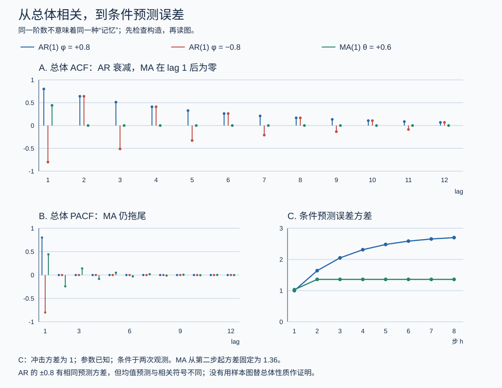

本页目录
时间序列 I · 平稳性与 ARMA 模型
统计线的方法默认样本 i.i.d.——时间序列恰恰相反：今天与昨天相关，相关性本身就是信息。本页立好平稳性语言，建起经典建模武器库 ARMA，给出"看图定阶"的实操流程。它是 Medusa 预测层与一切金融数据分析的统计学正音。
学习层：总体 ACF 是指纹模板，样本 ACF 只是带噪照片
1. 先预测：一条轨迹能替总体发证吗？
实验让 AR(1) 与 MA(1) 共用同一份固定随机回放。先判断：
- \(X_t=X_{t-1}+\varepsilon_t\) 的一条有限轨迹即便看起来围绕零，是否具有有限的平稳方差？
- MA(1) 的总体 ACF 在 lag \(>1\) 精确为零，有限样本 ACF 是否也会逐项精确截尾？
- 样本均值和方差在某个窗口内稳定，是否足以证明整个随机过程平稳？
提交后才显示理论 ACF、样本 ACF、根模和方差。移动样本长度会收紧抽样波动，但不会把一张样本图升级成对所有有限维分布或协方差结构的证明。
2. 静态后备：先查根，再谈指纹
| 模型 | 结构条件 | 总体方差 | 总体 ACF |
|---|---|---|---|
| AR(1) | \(\lvert\phi\rvert<1\) | \(\sigma^2/(1-\phi^2)\) | \(\rho(k)=\phi^k\) |
| AR(1)，\(\phi=1\) | 单位根，平稳条件失败 | 不存在有限常数平稳方差 | 不能套 \(\phi^k\) 的平稳解释 |
| MA(1) | 对任意有限 \(\theta\) 都宽平稳 | \(\sigma^2(1+\theta^2)\) | \(\rho(1)=\theta/(1+\theta^2)\)，\(k>1\) 时为 \(0\) |
MA(1) 的可逆性另要求 \(\lvert\theta\rvert<1\)；不可逆不等于不平稳。可逆性保证创新表示可由观测唯一恢复，而平稳性来自它本来就是有限个白噪声的线性组合。
实验用固定 seed 生成回放，并把每个 lag 的
逐行列出。图上的 \(\pm1.96/\sqrt n\) 只是白噪声 ACF 常用的单项近似参考带；多个 lag 同时检查、参数先估后检或非高斯重尾情形都需要更严谨的诊断。
3. 三条建模纪律
- 根条件是模型证书，轨迹图是观测。对 \(\lvert\phi\rvert\ge1\)，实验仍可生成有限序列，但会停止报告平稳方差和总体 ACF 证书。
- “截尾/拖尾”说的是总体模式。样本 ACF 永远带抽样波动，Box–Jenkins 识别还要结合 PACF、信息准则、残差和领域结构。
- 宽平稳不自动给遍历性。用时间平均替总体平均需要额外条件；一条路径无法仅凭视觉证明严平稳或遍历。
- 白噪声残差不是“每个样本相关恰为零”。它是总体不相关结构，实务上用联合检验与不确定性判断，而不是逐点追求零。
1. 平稳性：时序分析的入场券
宽平稳（协方差平稳）：均值恒定 \(E X_t = \mu\)；自协方差只依赖间隔 \(\gamma(k) = \mathrm{Cov}(X_t, X_{t+k})\)（与 \(t\) 无关）。（严平稳 = 全部联合分布平移不变，更强；高斯过程两者等价。）
为什么必须平稳：只有一条实现路径的数据，要用"时间平均"顶替"总体平均"（遍历性）——规律不随时间漂移是前提。非平稳序列直接建模 = 用会动的尺子量东西（下一页伪回归的事故现场）。
自相关函数（ACF）：\(\rho(k) = \gamma(k)/\gamma(0)\)——序列的"记忆指纹"，全页的中心诊断工具。白噪声：\(\rho(k) = 0\ (k \neq 0)\)——无记忆的基准（建模的终点：残差应为白噪声）。
2. AR / MA / ARMA 三件套

（记 \(B\) 为滞后算子 \(BX_t = X_{t-1}\)，\(\varepsilon_t\) 为白噪声。）
AR(p) 自回归：\(X_t = \phi_1 X_{t-1} + \cdots + \phi_p X_{t-p} + \varepsilon_t\)——"今天 = 昨天们的加权 + 新息"。
AR(1) 详解（原型，值得吃透）：\(X_t = \phi X_{t-1} + \varepsilon_t\)：
- 平稳条件 \(|\phi| < 1\)（反复代入 \(X_t = \sum \phi^j\varepsilon_{t-j}\) 收敛；\(\phi = 1\) 即随机游走——方差发散，下一页主角）；
- \(\mathrm{Var} = \frac{\sigma^2}{1-\phi^2}\)，ACF 指数衰减 \(\rho(k) = \phi^k\)（记忆平滑消退）；
- 三重亲缘：离散化的 OU 过程（sde-02 对账：\(\phi = e^{-\theta\Delta t}\)）、连续状态的 Markov 链、ode 差分方程——四门课同一个对象。
一般 AR(p) 平稳条件：特征方程 \(1 - \phi_1 z - \cdots - \phi_p z^p = 0\) 的根全在单位圆外（与 ode-03"特征值实部<0"、Markov 链"谱<1"同一句话的第三种口音）。
MA(q) 滑动平均：\(X_t = \varepsilon_t + \theta_1\varepsilon_{t-1} + \cdots + \theta_q\varepsilon_{t-q}\)——"近 \(q\) 期冲击的余波"。恒平稳（有限和）；ACF 在 \(q\) 步后精确截尾（隔 \(> q\) 期无共同冲击）。
ARMA(p, q)：两者合体——用最少参数拟合复杂相关结构（简约原则）。Wold 定理（理论保底，陈述）：任何宽平稳序列 = 确定性部分 + MA(∞)——ARMA 的普适性执照。
3. Box–Jenkins 建模流程（实操主线）
第一步 · 识别（看图定阶）：
| 图形 | AR(p) | MA(q) | ARMA |
|---|---|---|---|
| ACF | 拖尾（指数/振荡衰减） | q 步截尾 | 拖尾 |
| PACF（偏自相关：剔除中间项后的"直接"相关） | p 步截尾 | 拖尾 | 拖尾 |
（"截尾看谁定谁的阶"——AR 看 PACF、MA 看 ACF；都拖尾则 ARMA，用信息准则 AIC/BIC 选阶——统计 II 似然 + 参数惩罚，MDL 思想的时序版。）
第二步 · 估计：最小二乘 / MLE（统计 II 的方法在相关数据上的推广）。
第三步 · 诊断：残差必须是白噪声（Ljung–Box 检验残差 ACF 整体为零——统计 IV 的假设检验上岗）。残差还有结构 = 模型没吃干净，回第一步。
第四步 · 预测：递推条件期望 \(\hat X_{t+h} = E[X_{t+h} \mid \mathcal{F}_t]\)（概率 IV"最佳预测=条件期望"的时序实装）；预测区间随步长扩大、趋于无条件分布——平稳序列的长期预测收敛到均值："模型只在短期有超越均值的信息"，诚实的预测系统必须报告这个衰减（你预测层日/周/月分粒度命题的统计学根据）。
4. 典型例题
例 1（AR(1) 手算） \(X_t = 0.8X_{t-1} + \varepsilon_t\)，\(\sigma^2 = 1\)：方差 \(= \frac{1}{1-0.64} \approx 2.78\)；\(\rho(3) = 0.8^3 = 0.512\)——三期后记忆仍过半；预测 \(\hat X_{t+h} = 0.8^h X_t\) 指数归零（向均值 0 回归）。
例 2（定阶判读） 样本 ACF 在 lag 1、2 显著后骤降为零，PACF 缓慢衰减 ⇒ MA(2)（ACF 截尾定 MA 阶）。
例 3（残差诊断的价值） 某"拟合优秀"的模型残差 ACF 在 lag 12 显著——月度数据的季节性没建进去（应上季节 ARIMA）。\(R^2\) 再高，残差指纹不清白就不能上岗（统计 V 残差图纪律的时序版）。\(\blacksquare\)
下一页：现实数据大多不平稳、金融数据还有波动聚集——单位根、伪回归陷阱、GARCH，以及"时间序列的预测纪律"。